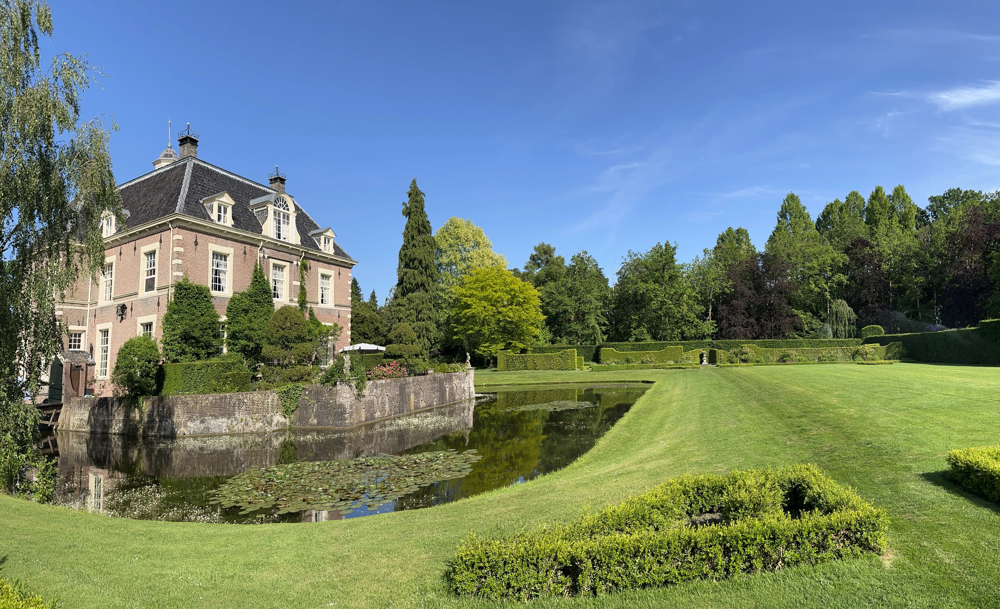
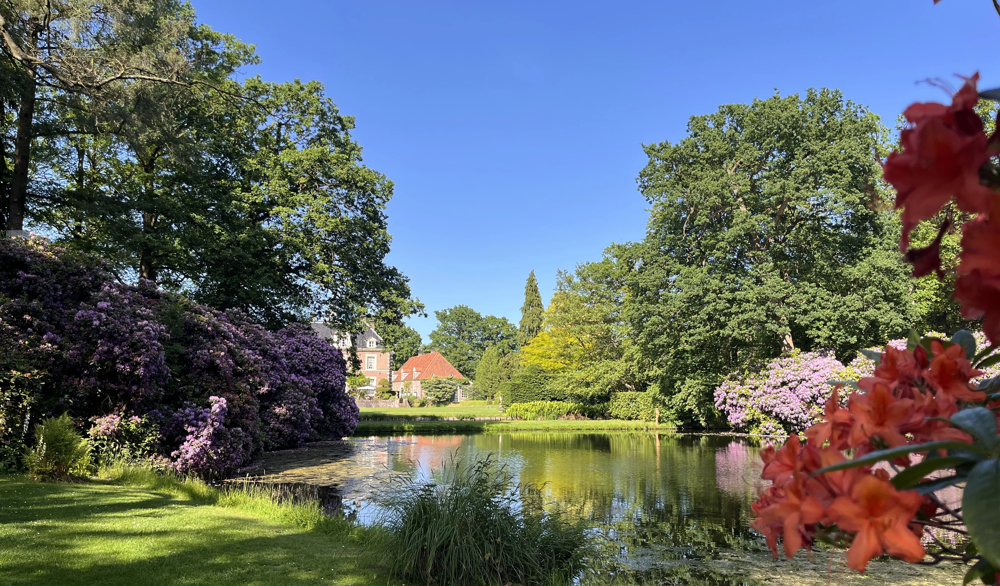
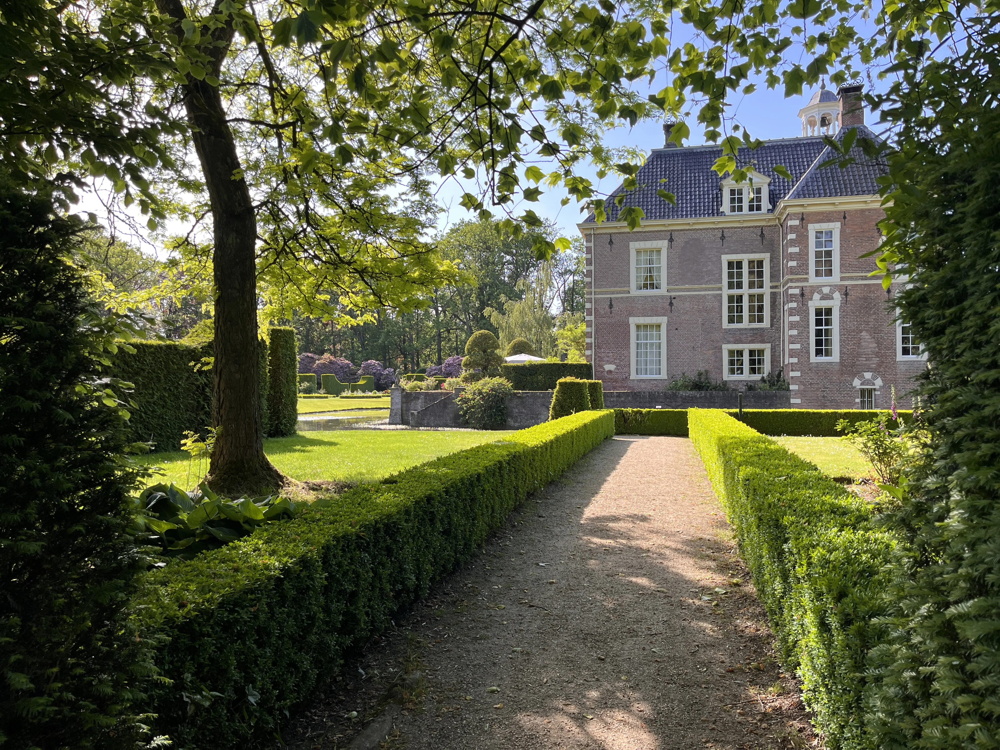
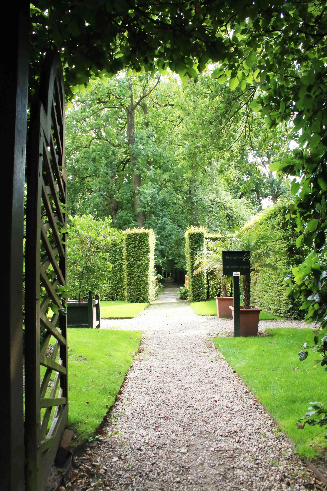
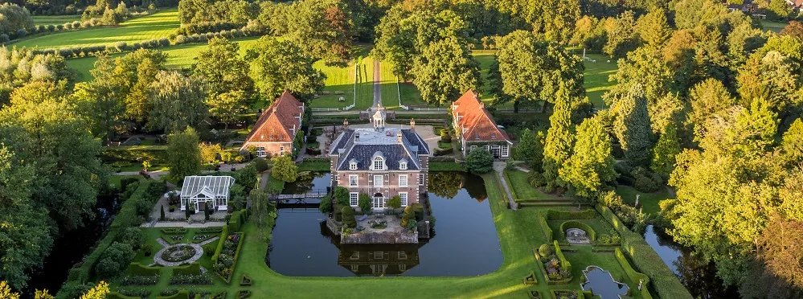
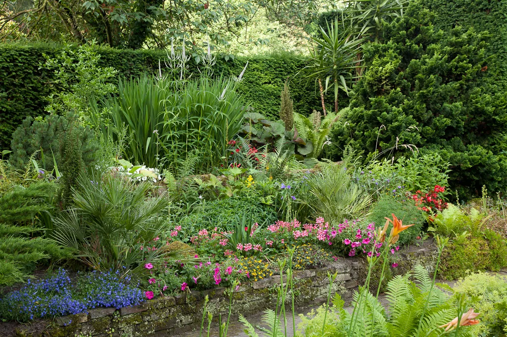

Kasteel Warmelo ligt aan de rand van Diepenheim, omgeven door bos en gelegen binnen de 7 hectare historische tuin. Het landgoed weerspiegelt vier eeuwen tuinarchitectuur — van middeleeuwse kruidentuinen tot de formele Franse geometrische tuin en het romantische Engelse landschapspark.
In 1992 startte een grootscheepse en ingrijpende renovatie van de historische tuinen en het bijbehorende grachtenstelsel. Alle grachten zijn in 2009 uitgebaggerd en voorzien van nieuwe beschoeiingen — dit proces van renovatie werd in 2010 afgerond.
De natuur leeft, groeit en sterft af. Zo zijn we op Kasteel Warmelo het gehele jaar door druk om dit historische erfgoed te bewaren voor de toekomst.


Reeds in de middeleeuwen kende men tuinen binnen de veilige ommuring van burchten en kloosters — veelal moes- of kruidentuinen.
In navolging van Italië en Frankrijk ontwikkelde zich een tuinstijl met strakke lijnen en een assenstelsel. De formele Franse tuin van Warmelo werd reeds op de kaarten van Hottinger (1773) ingetekend.
Na het midden van de 18e eeuw ontstond een geheel nieuwe opvatting — de nadruk op oorspronkelijke landschappelijke schoonheid, met kunstmatige heuvels, vijvers en rustieke bruggetjes.
De 'put-tuin' werd in de jaren twintig aangelegd door baronesse Creutz, met behulp van tuinarchitect Hugo Poortman. Het pinetum werd later gerestaureerd op verzoek van prinses Armgard von Lippe Biesterfeld.
Overwoekerde lanen werden hersteld, exotische loof- en naaldbomen geplant, grachten uitgebaggerd. Het levend erfgoed wordt dagelijks onderhouden en bewaard voor de toekomst.



Seizoen 29 april – 4 oktober 2026. Dinsdag t/m zondag van 10.30 tot 16.30 uur.